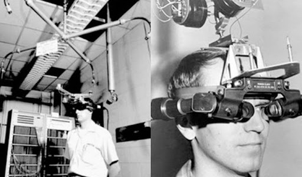
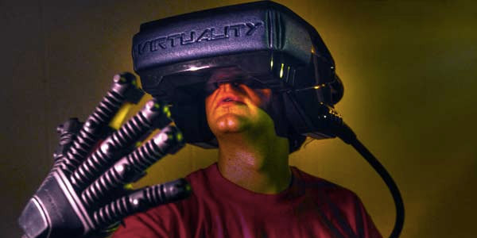
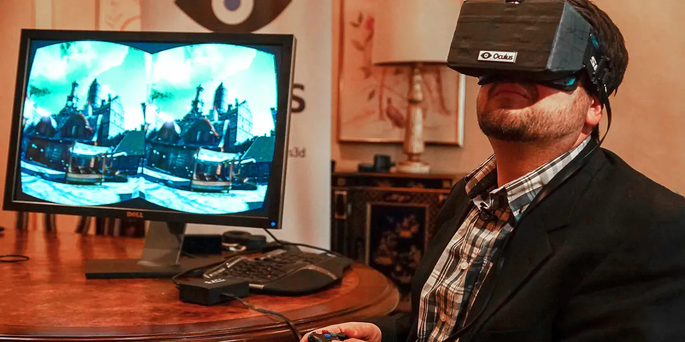
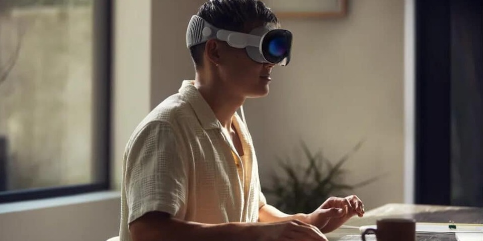

La Storia della Realtà Virtuale
1968
Sword of Damocles è considerato il primo visore VR della storia, fu sviluppato da Ivan Sutherland e suo studente Bob Sproull. Questo dispositivo pionieristico era un enorme apparecchio collegato al soffitto, tanto pesante da dover essere sospeso sopra la testa dell'utente, da cui il nome "Spada di Damocle". Il visore proiettava semplici wireframe tridimensionali che si adattavano ai movimenti della testa grazie a un sistema di tracciamento. Nonostante fosse rudimentale e scomodo, rappresentò un passo fondamentale nella nascita della realtà virtuale, dimostrando per la prima volta la possibilità di immergere l’utente in un ambiente interattivo generato da un computer.
1989
Alla fine degli anni ’80, la realtà virtuale fece i suoi primi passi nel mercato. Nel 1989, VPL Research lanciò l’EyePhone, uno dei primi visori VR commerciali, usato soprattutto in ambito professionale. Poco dopo, nei primi anni ’90, arrivarono anche i primi arcade VR, come il sistema Virtuality, che offriva giochi 3D con visori e tracciamento del movimento. Questi prototipi, seppur primitivi, segnarono l’inizio della VR nel mondo dell’intrattenimento.
2012
l’Oculus Rift fu lanciato su Kickstarter come progetto di crowdfunding, raccogliendo oltre 2 milioni di dollari grazie all'entusiasmo della comunità tech e gamer. Creato da Palmer Luckey, il Rift prometteva una VR accessibile e immersiva. Il suo successo segnò una svolta storica, attirando l’attenzione globale e portando nel 2014 all’acquisizione di Oculus da parte di Facebook per 2 miliardi di dollari. Questo evento rilanciò l’interesse per la realtà virtuale, spingendo l’intera industria verso una nuova era di sviluppo.
2020
Il lancio del Meta Quest 2 nel 2020 ha reso la diffusione della realtà virtuale mainstream grazie ad un prezzo accessibile, alla sua facilità d’uso e la possibilità di giocare sia in modalità standalone che collegato a un PC, il Quest 2 ha raggiunto milioni di utenti, diventando il visore VR più popolare al mondo. Parallelamente, il rilascio di Half-Life: Alyx da parte di Valve ha mostrato cosa può offrire la VR ad alto livello: un’esperienza immersiva, coinvolgente e tecnicamente avanzata, che ha conquistato critica e pubblico. Il successo combinato di Quest 2 e Alyx ha segnato una svolta decisiva, dimostrando che la VR non era più solo una curiosità tecnologica, ma una piattaforma di gioco matura e in espansione.

2025
Oggi, la realtà virtuale sta spianando la strada per altre tecnologie in evoluzione come per la realtà aumentata e mista, una fusione tra mondo reale e digitale. Le grandi aziende tech, come Apple con il suo Vision Pro e Meta con i visori Quest Pro e Quest 3, stanno guidando questa transizione. Questi dispositivi combinano VR e realtà aumentata, permettendo interazioni non possibili prima con l'ambiente circostante. Il futuro della VR non sarà solo gioco, ma coinvolgerà anche lavoro, comunicazione, educazione e creatività, portando le esperienze digitali sempre più vicine alla nostra vita quotidiana.
